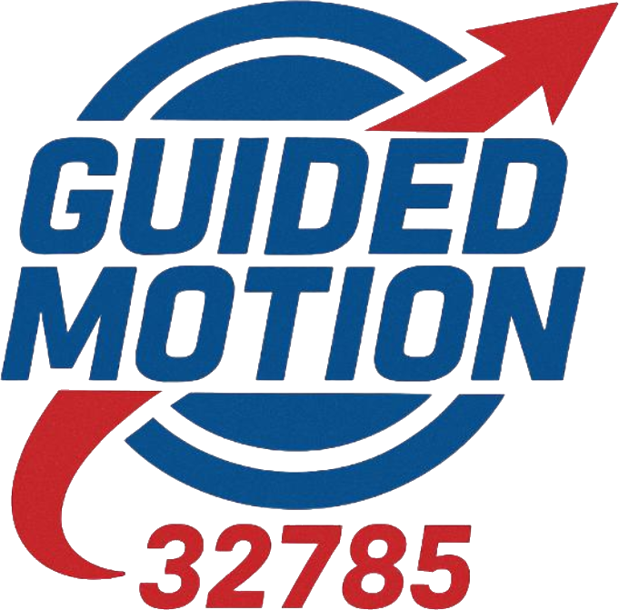

Guided Motion
Team #32785 · FIRST Tech Challenge
Designing and programming the physical drivetrain for precision and repeatability.
Turning sensor data into reliable, repeatable autonomous behavior.
Every subsystem is built to be measurable, tunable and documented — because a robot you can reason about is a robot you can improve. Autonomous routines are structured so behavior is predictable under competition pressure, and the codebase stays readable for the whole team.
Formulating sponsorship packages, pitching to partners, and building relationships that fund the season.
Documentation pipelines — engineering notebooks, process logs and reporting that judges & sponsors trust.
Community outreach marketing — events, social presence and STEM advocacy that grow the team's reach.
A great robot doesn't compete on its own — it needs funding, visibility and a story. I treat the team like a startup: clear brand, repeatable documentation, and outreach that compounds. That's how technical work turns into sponsorships, community impact and a program that lasts.
I'm always looking for partners & STEM collaborators.
partner with the team